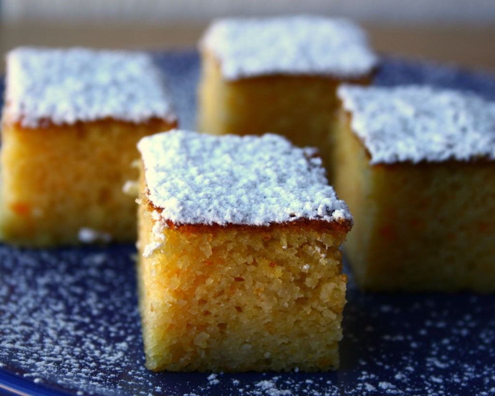

¡Ya están aquí las esperadas mandarinas! Hemos comenzado la nueva temporada con ellas y mientras esperamos a que las naranjas estén en su punto óptimo de maduración, vamos a disfrutar de estos primeros gajos también en forma de postre o merienda con este bizcocho casero.
¿Preparados para poner las manos en la masa? ¡Muy bien! Además, recordad que esta receta de bizcocho de mandarina la vamos a realizar sin harina y por tanto será totalmente apta para celíacos. Prestad atención, es muy sencilla.
Ingredientes
- 2 o 3 mandarinas grandes.
- 6 huevos.
- 250 gr. de azúcar.
- 1 cucharada pequeña de levadura (nosotros utilizamos una especial sin gluten).
- Un poco de mantequilla para untar el molde.
- Azúcar glas (para espolvorearla por encima una vez acabada).
Elaboración
Preparamos una olla con agua, la llevamos a ebullición y hervimos las mandarinas sin pelar durante 30 minutos. Acto seguido, cambiamos el agua y hervimos de nuevo durante otra media hora.
Encendemos el horno, para que vaya precalentándose, y lo ponemos a 180º (consejo: sólo la parte de bajo y sin ventilador).
Seguimos, batimos los huevos junto al azúzar, la levadura y mezclamos bien. Por otra parte, trituramos las mandarinas que hemos hervido con piel incluída y las añadimos a la masa ya mezclada.
Engrasamos con mantequilla el molde que vayamos a utilizar para el bizcocho y vertemos la mezcla final en él. Hornear durante una hora aproximadamente a 190º.
Una vez transcurrido el tiempo, sacamos el bizcocho del horno y dejamos que se enfríe. Por último, desmoldamos y en caso de que os guste lo espolvoreamos con azúcar glas.
¡Increíblemente fácil! Y en un ratito, habremos elaborado un magnífico bizcocho de mandarina sano, dulce y sin muchas calorías.

¿A qué esperas para probarlo? ¡Toda la familia lo disfrutará en casa!


Hola, quisiera saber que medida tiene el molde que habéis utilizado para hacer este bizcocho ya que no lo habéis puesto y me sería de ayuda.
Muchas gracias!
Susanna.
Hola Susana, cualquier molde que suelas utilizar para hacer bizcochos será válido. El que yo utilizo es uno rectangular metálico de 36 cm. Saludos!
Gracias!!
[…] preguntaba en nuestra página de Facebook por alguna receta con naranjas sanguinas que superase al bizcocho de mandarina. ¡No sabemos si la superará pero aquí está nuestro intento! Te la dedicamos, […]
¡Hola, Cristina!
Gracias por tu comentario 🙂 Puedes utilizar la levadura que prefieras; tanto la de panadería como la que puedes encontrar en polvo. ¡Eso ya depende de gustos! Nosotros para esta receta especial apta para celíacos hemos utilizado una levadura en polvo sin gluten.
¡Anímate, es muy rápido y fácil de hacer!
¿Qué tipo de levadura ha de utilizarse? ¿Levadura de panadero o en polvo tipo Royal? Gracias! voy a intentar hacerla porque tiene buenísima pinta!
¡Hola, Mercedes!
Muchas gracias por tu comentario 🙂 Efectivamente, la cocción provoca que el aporte de vitaminas sea menor. Sin embargo conseguiremos aprovechar más ciertas sustancias nutritivas, como los minerales que son muy estables a la cocción.
Siempre podremos utilizar la fruta natural y fresca para adornar este postre para que nuestros cuerpos sigan beneficiándose de las vitaminas que aportan las mandarinas. Por ejemplo, colocando unos gajos de mandarina por encima del bizcocho en forma de corazón 🙂
¡Feliz año!
Hola!!. Tiene muy buena pinta el bizcocho, pero al cocer la fruta y tirar el agua no perdemos parte de las vitaminas y del sabor? . Gracias y feliz año para todos.
¡Estupendo, Javier! Nos alegra que te hayas animado a realizar nuestra receta 😉 Muchas gracias por tu comentario y por compartir más detalles, que seguro interesarán a nuestros lectores.
Un abrazo amigo.
YA LO HE HECHO……. MUY MUY BUENO, ENHORABUENA ES UNA RECETA SENCILLA, Y SALE ESCANDALOSAMENTE BUENA, MAS A QUIEN LE GUSTE UN ULTIMO REGUSTO AMARGO…… COMO LA MERMELADA DE NARANJA AMARGA DISFRUTARÁ
me pongo ya a hacerlo…. ya os comento…
¡Qué bien, Eduardo! Gracias por contárnoslo, nos hace mucha ilusión que pongáis en práctica nuestras recetas con cítricos 😉
¡Muchísimas gracias, Fanny! 🙂
Querida Cristina:
Las mandarinas hay que triturarlas sin el agua con las que las hayas cocido. Es decir, las separamos del agua y trituramos las mandarinas con piel incluída 😉
Esta buenísimo. Yo lo hice la semana pasada
¡Qué interesante! Me ha gustado mucho.
Se trituran las mandarinas con el agua de cocer?
Estimadas Josefina, Merche y Ana:
Este tipo de bizcocho no contiene nada de harina y por ello, además de apto para celíacos, es mucho más ligero y contiene menos calorías. Como comentamos con otra lectora del blog en Facebook (Inma Ruiz Fernandez), con el huevo, el azúcar y la levadura conseguimos una masa que luego es muy similar a la del bizcocho, más jugosa al no llevar harina, eso sí 😉
Inma nos comentó que quizá siendo de esta manera tan peculiar debería llamarse cuajado de mandarina. ¿Vosotras qué pensáis?
Un abrazo para las tres y feliz fin de semana.
Un pastel sin harina?
¿No lleva harina¿
El bizcocho tiene muy buena pinta, pero ¿no lleva nada de harina?